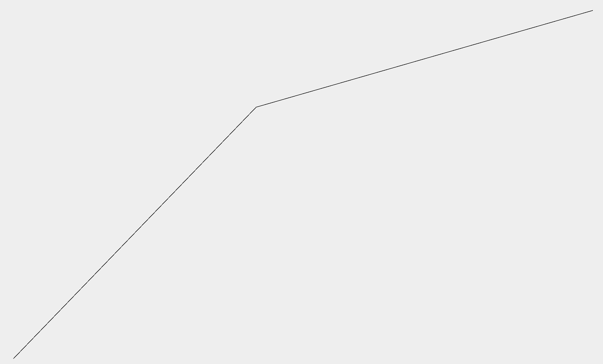

This is a website where I can showcase some of my projects.

Fractals look awesome.
Something about their unpredictability makes them unlike anything else. When I made this fractal, I had no idea what it would look like. The fractal generating program I made generated this fractal from a simple 'base' pattern. All I did was try out this pattern and let the program do the rest.
The base for this fractal was:
That doesn't seem very exciting. So how does a simple line turn into a complex shape?